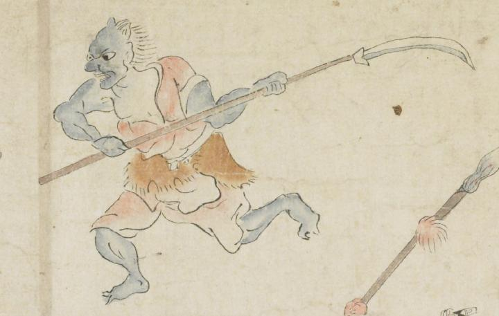

青い鬼。額が広く、頭頂部に2本角を生やしている。後頭部から髪を伸ばしている。目玉が大きく、鼻は突き出ている。赤い着物を片肌脱ぎにし、腰に毛皮を巻きつけている。両腕で薙刀状のものを持ち、左側に向って走っている。
著作者：坂本弥一郎徳定／出典：親書誌：U426_nichibunken_0080：伊吹山酒呑童子絵巻；イブキヤマシュテンドウジエマキ／日付：2007／資源識別子：U426_nichibunken_0080_0014_0003
Copyright (c)2010- International Research Center for Japanese Studies, Kyoto, Japan. All rights reserved.